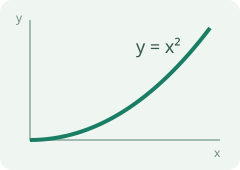

DOCUMENT VIEWER · HTML
Read your documents
inside Paseo.
Local styles, images and mathematical notation, together in one workspace tab.
Zoom the whole document
Use the − and + controls above, or press Ctrl/Cmd with +, − or 0 while reading. The document stays open as the scale changes.
50% — 300%
Keep mathematical notation
LaTeX is rendered locally into SVG, so formulas remain sharp as you zoom.
$$\int_0^1 x^2\,dx=\frac13$$
Styles and images included
This page uses a separate stylesheet and an SVG illustration from its own asset folder. The viewer includes them automatically.
Open the companion PDF at page 2 ↗